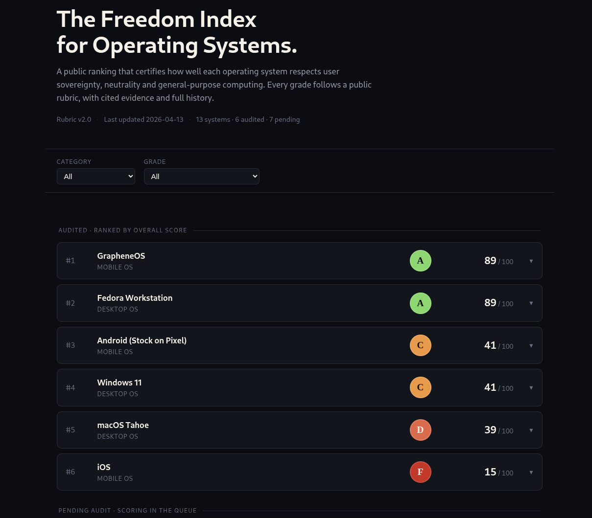

Open-OS Index
The Freedom Index for operating systems.
A public ranking that certifies how well each operating system respects user sovereignty, neutrality, and general-purpose computing. Every grade follows a public rubric, with cited evidence and full history.
Operating systems are scored across three weighted axes — owner sovereignty, ecosystem freedom, and technical openness — spanning nine dimensions and graded from S (Absolute Sovereignty) to F (Hostile).
